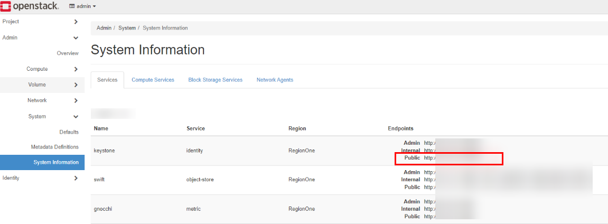

This section describes how to obtain the Keystone V3 address of OpenStack when you need to register OpenStack using the address.
For FusionSphere OpenStack, perform the following steps to obtain the Keystone V3 address:
su - root
source set_env
openstack endpoint list | grep keystonev3
host02:~ # openstack endpoint list | grep keystonev3 | 6894ac66481e46e493c09b76110ec474 | az236.dc236 | keystonev3 | identityv3 | True | admin | https://identity.az236.dc236.huawei.com:443/identity-admin/v3 | | 70b95d31ae75419980442cfae7362d97 | az236.dc236 | keystonev3 | identityv3 | True | internal | https://identity.localdomain.com:8023/identity-admin/v3 | | 25cb9711e63f420b944d048bddba0d3d | az236.dc236 | keystonev3 | identityv3 | True | public | https://identity.az236.dc236.huawei.com:443/identity/v3
For the OpenStack community version, perform the following steps to obtain the Keystone V3 address:
